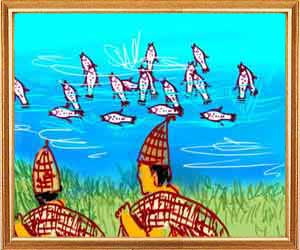

Three fish lived in a pond. Their names were Anagatavidhata, Pratyutpannamati and Yadbhavishya. Some fishermen passing by the pond wondered, “Hey, we have never seen this pond. It seems to be full of fish. It is now evening. Let us come at dawn tomorrow and bag as many fish as we can.”
Hearing the fisherman, Anagatavidhata (the one who foresees a danger in time) called a meeting of all the fish and told them, “Haven't you heard what the fishermen were saying? We must move out of this pond tonight itself. As the wise men have said weak men should flee when a strong man invades or seek refuge in a fort. There is no alternative.”
“The fisherman will come tomorrow. I think we should not be here for even a moment more,” said Anagatavidhata.
“That's true. I endorse your suggestion,” said Pratyutpannamati. “Let's go elsewhere. Those who are afraid of foreign lands and those who are bound to their soil will die in their own country. He who can prosper anywhere does not die in his own land clinging to sentiment.”
Loudly laughing, Yadbhavishya said, “Your plans are not good. Why should we leave this pond, ancient home of our forefathers, because the fishermen have evil intentions. If it is destined, we cannot escape death even if we go elsewhere. Everything is in the hands of God. You cannot dispose what he proposes. Without his blessings people will die even if they have protection. With his blessings nobody can kill them even if they do not have protection.
Unable to convince him, the other two fish left the pond. Coming the next day, the fishermen took a big catch of fish in the pond. Yadbhavishya was one among them.
The female pheasant resumed, “That is why I told you that those who foresee the problem and those who deal with the problem when it arises are always victors and those who trust their luck are the losers.”
Her husband asked, “In that case do you think I am as stupid as that Yadbhavishya? Wait and see what I can do. I will siphon off all the water in the Sea and leave him dry.”
“Don't try to settle scores with the Sea. It will do no good to you. A weak man's anger will hurt him in the end.”
“Don't discourage me. Those who have confidence can confront stronger men. Doesn't the lion who is small in size slash the crown of the mighty elephant? Doesn't a small wick repel darkness? He who has courage is the stronger person. See how I will siphon off all the water in the Sea and make him dry,” said the male.”
"But hundreds of rivers flow into the sea. Your beak is just as big as a drop of the sea. How can you consume all the water in the Sea? Stop this tall talk,” advised the female.
“Not to despair is to win the Goddess of Wealth. I have an iron beak. I will toil day and night to siphon of all the water.”
The wife said, “Okay, if you want to engage the Sea, call all of your friends and try to do the job together. When they are united, it is difficult to defeat even a band of weak men. Even blades of slender grass can bind an elephant if they are woven into a rope.